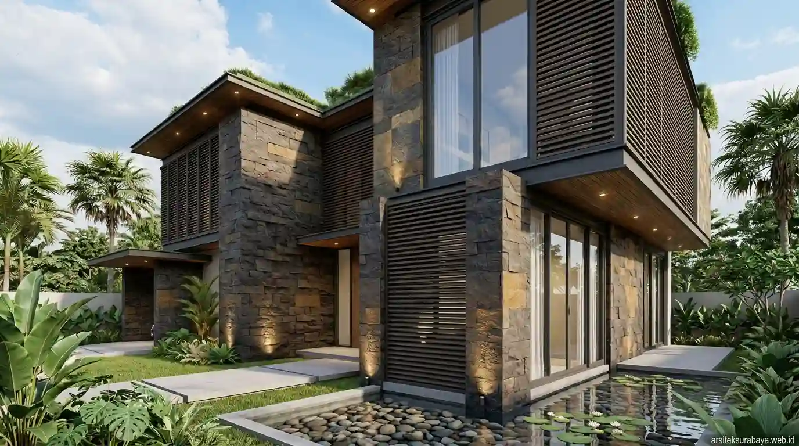

Material & Teknis

2 September 2026 | Tim Arsitek Surabaya
Tips Memilih Material Bangunan Tahan Cuaca Ekstrem Tropis
Panduan memilih material atap insulasi, dinding anti jamur, dan kusen aluminium/UPVC tahan cuaca panas lembap di Surabaya.